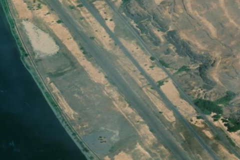

LOWER GRANITE STATE
00W · WA

Aerial imagery source: Esri, Vantor, Earthstar Geographics, and the GIS User Community
View original source (FAA + Shortfield) →
| Identifier | 00W |
|---|---|
| State | WA |
| Runway length | 3,400 ft |
| Runway width | 50 ft |
| Surface | GRAVEL |
| Runway | 14/32 |
| Elevation | 719 ft |
| Ownership | public |
| CTAF | 122.9 |
| Coordinates | 46.67275, -117.44166666 |
Notes
[shortfield] Location Overview Lower Granite State Airport (00W) sits about 12 miles south of Colfax, Washington, in Whitman County, right along the Snake River. It's co-located with the Lower Granite Lock and Dam, and the field is leased from the U.S. Army Corps of Engineers. The single runway, 14/32, is a 3,400-foot gravel strip that slopes downhill to the northwest, sitting at a field elevation of 719 feet inside a fairly narrow, steep-walled canyon with drop-offs on both sides of the runway. Camping & Recreation The airport is a genuine outdoor-recreation gateway. Just northwest of the airfield is a large marina and water recreation area, plus a restaurant, bathrooms, camping, and a small motel. Nearby Boyer Park offers camping, picnic areas, fire rings, an outhouse, and water, with facilities roughly a quarter mile from a resort. The area is popular for fishing, camping, and educational tours through the dam — though dam tours require calling ahead, and flying directly over the dam itself isn't recommended for security reasons. Notes & Warnings Vehicles, pedestrians, and animals may be on or near the runway, and snakes have been spotted around the field, so pilots should stay alert both in the air and on the ground. Strong, gusty winds funnel up and down the canyon, and crosswinds can create windshear near the rim; the approach from the east curves around a river bend, while the approach from the west is clear. The gravel surface itself can be loose, isn't well suited to low-wing or low-prop aircraft, and raises a real risk of prop strikes during runup and takeoff, so an overflight to check field conditions before landing is recommended. Snow adds another layer of risk — pilots should not land if snow is present, since there's no winter snow removal and the field simply closes when snow occurs. Summer visitors should also keep density altitude in mind, as the combination of elevation and canyon heat can affect performance. History Lower Granite State Airport has been an active public-use airfield since it was activated on July 1, 1966. It was built as one of several airstrips the Washington State Department of Transportation's Aviation Division leases from the Army Corps of Engineers alongside the Corps' Snake River lock-and-dam system — in this case, right next to the Lower Granite Lock and Dam. Rather than serving commercial or business traffic, it was designed to give recreational pilots, anglers, and campers backcountry access to the Snake River corridor, and it continues to be maintained today as one of Washington's state-managed recreational airports, with WSDOT still overseeing runway upkeep, signage, and NOTAMs for the field.